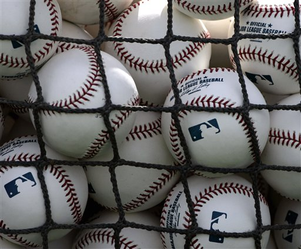

Game 1

Opponent: Sennett Stars
The Wildcats were the home team at Muir Field, so the Stars started on a fine Saturday afternoon, sunny and not too hot. Coach Huibregtse was kind enough to bring Gatorade for the entire team, so we didn't get dehydrated.
 Helen pitched the first 5 innings. The Stars put two men on base but didn't score, and the Wildcats went down 1, 2, 3. Not a good beginning. The Stars then scored 2 runs on a single, a walk, a single that filled the bases, and, after two men out, a single that drove 2 runs home. Helen got that last man out. Two innings went by with no more runs. Finally, John was walked and Samuel's single drove him to third. Melannie hit a solid hit to center field, and John came home.Samuel was on third. Andrew struck out (the stars' pitching was excellent the entire game), but Elizabeth got a single and Samuel came home to tie up the game. The next two innings were not as exciting, but both teams scored a single run. Then, in the final inning, the Star's main pitcher was replaced and the Wildcats went wild! 4 runs later, the final score was:
Wildcats: 7
Stars: 3